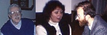

The SFSF committee welcomes you to the annual San Francisco Science Fiction convention. The convention starts Thursday, August 19th at 8 p.m. with the Get-Together party in Derleith Hall. The fun doesn't stop until Sunday morning on August 22nd. Be sure to attend Friday's costume party and the "You Don't Know Jack" trivia contest.
The guests of honor at this year's convention are: Philip Forrest, famous fan and fiction follower; Karen Charnas, author of the award-winning novel The Unicorn Express, and Jeffrey Unwin, critic and editor of The Magazine of Speculative Fiction.

Registration is $35 at the door, $30 in advance. It's worth it!
For more information and a calendar of events, contact:
SF SF
301 Howlitze Lane
San Francisco, CA 94201
(311)555-2989